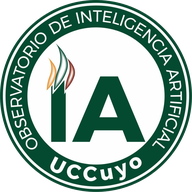

Satélite y potreros de su establecimiento. Capas y manejo quedan cerrados para no tapar el mapa.En el celular no se abre el campo de ejemplo: se ve cómo se cargan los datos.

Observatorio de IAde la UCCuyoOIA
Sociedad Rural de San Luis
Campo Gemelo Digital SL
Datos del territorio para decidir en el campo
Servicio al productor: ver su lote, leer la situación actual y salir con un informe de puntos críticos. Corto y mediano plazo, con o sin inversión inmediata. Sin desmonte y sin recortar el agua de bebida.
Un punto, las esquinas, o una foto JPG del plano de mensura. Puede guardar más de un campo y cambiar. El límite declarado no es el padrón.
El satélite se pide por recorte. El verde del campo (NDVI) y el uso del suelo se ven sobre el lote, también en el celular.
El informe final muestra la situación inicial (INTA), la mejorada con lo que usted cargue y la óptima con inversión a corto y mediano plazo.
Cada campo se estudia por separado. Capas: satélite, verde NDVI, INTA, OTBN, lluvia y tasa de forraje.
Presentación para productores (4 diapositivas) · PowerPoint · Instructivo
Gemelo Digital Ganadero
Capas
Imágenes
Satélite de este campo.
Suelos
INTA Peña Zubiate · aptitud ganadera.
OTBN
Este lote: II amarillo. I rojo · III verde. No se desmonta.
Aguadas
Toque el mapa para marcar bebida. Círculo 400 m = cría.
Lluvia
Régimen de este campo: se lee al ubicar el lote.
Forraje
Tasa de este campo: se lee al ubicar el lote.
Manejo
Toque una columna: el calendario dice hasta dónde subir.
¿Qué hace para aguantar el año con esa hacienda?
Potrero
Toque un potrero en el mapa.